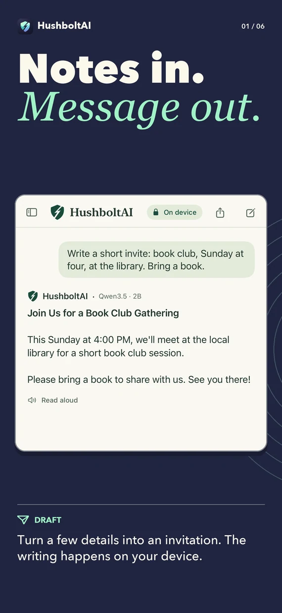

Private AI tools for iPhone and iPad
Find the right words, even offline.
Soften an email or turn notes into a checklist. The AI runs on your device and never sends your draft to an AI server.
10 free new replies per device each day. No subscription.

Your first conversation
What would you like to write?
Choose a task. Use the example in HushboltAI as written, or replace the details with your own.
How to rewrite an email offlineDraft an invitation
See the example on iPhone: Draft an invitationWrite a short invitation to our book club. We’re meeting at the library on Sunday at 3. Ask people to bring a favorite book.
Soften a deadline reminder
See the example on iPhone: Soften a deadline reminderMake this message friendlier without changing the deadline: “I need your edits by Friday.”
Turn notes into a checklist
See the example on iPhone: Turn notes into a checklistMake a picnic checklist from these notes: buy bread, pack the blanket, fill the water bottles.
Before you download
Ready for offline use
The App Store lists the app at about 1.9 GB because both AI models are included. Download it on Wi-Fi before a trip. There’s no account to create and no second download to start writing.
Your conversations
Chats stay on your device unless you turn on private iCloud sync. The AI writes the replies on your device either way.
Free or a single purchase
Your 10 new replies reset at local midnight. Reusing a matching saved reply doesn’t count. Buy Plus once for unlimited replies from the included models and Markdown export in this edition.
Inside HushboltAI
Real conversations and settings from version 1.1 on iPhone.


Take your next draft offline.
For iPhone and iPad running iOS 17 or iPadOS 17, or later.